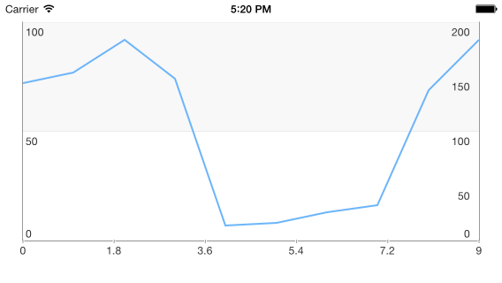

Chart: Structure
TKChart consists of the following elements:

plot area - this is the area where chart data is drawn.
series - chart data is represented by series objects. Each series object defines the chart type and contains a set of points to be drawn. The chart can display different series object simultaneously.
axes - there are four axes areas that surround the plot area. The axes define the dimensions in which data is drawn inside the plot area. Each axis can be attached to a single or many series.
title - this is the chart title. Its style and position can be customized. The chart title is hidden by default.
legend - the chart legend displays additional information about series objects. Its style and position can be customized. The chart legend is hidden by default.
In addition to these visual objects, TKChart uses the following protocols:
dataSource - The chart data source is used to supply the chart with data. Setting this property is optional, as you can assign data directly to the series object. In case you decide to use this property, you have to implement the TKChartDataSource* protocol.
delegate - The chart delegate is an optional protocol that allows chart consumers to receive notifications from TKChart. It allows also customizing chart appearance and animations.
Axes
TKChart renders its points in a coordinate system defined by its axes. To do this, axes specify the minimum and maximum values that can be presented on the plot area. There are a few different types of axes that can be used with TKChart. They include: numeric, date/time and categoric. You can assign each axis to different series and you can show multiple axes in a chart. Axes contain various properties to control their position, style and behavior. All chart axes subclass from TKChartAxis.
- Use TKChartNumericAxis to present numeric values.
- Use TKChartDateTimeAxis to present date/time values.
- Use TKChartCategoryAxis to present categoric values.
In order to show multiple axes in TKChart, create several axes and customize their position. Then use the xAxis and yAxis properties of the series to assign them:
Objective-C
TKChartNumericAxis *xAxis = [[TKChartNumericAxis alloc] init];
xAxis.position = TKChartAxisPositionBottom;
[chart addAxis:xAxis];
TKChartNumericAxis *yAxis1 = [[TKChartNumericAxis alloc] initWithMinimum:@0 andMaximum:@100];
yAxis1.majorTickInterval = @50;
yAxis1.position = TKChartAxisPositionLeft;
yAxis1.style.lineHidden = NO;
[chart addAxis:yAxis1];
TKChartNumericAxis *yAxis2 = [[TKChartNumericAxis alloc] initWithMinimum:@0 andMaximum:@200];
yAxis2.majorTickInterval = @50;
yAxis2.position = TKChartAxisPositionRight;
yAxis2.style.lineHidden = NO;
[chart addAxis:yAxis2];
NSArray *values1 = @[@12, @10, @98, @64, @11, @27, @85, @72, @43, @39];
NSMutableArray *incomesData = [[NSMutableArray alloc] init];
for (int i = 0; i < values1.count; i++) {
[incomesData addObject:[[TKChartDataPoint alloc] initWithX:@(i) Y:values1[i]]];
}
TKChartLineSeries *series = [[TKChartLineSeries alloc] initWithItems:incomesData];
series.xAxis = xAxis;
series.yAxis = yAxis1;
[chart addSeries:series];
Swift
let xAxis = TKChartNumericAxis()
xAxis.position = TKChartAxisPosition.Bottom
chart.addAxis(xAxis)
let yAxis1 = TKChartNumericAxis(minimum: 0, andMaximum: 100)
yAxis1.majorTickInterval = 50
yAxis1.position = TKChartAxisPosition.Left
yAxis1.style.lineHidden = false
chart.addAxis(yAxis1)
let yAxis2 = TKChartNumericAxis(minimum: 0, andMaximum: 200)
yAxis2.majorTickInterval = 50
yAxis2.position = TKChartAxisPosition.Right
yAxis2.style.lineHidden = false
chart.addAxis(yAxis2)
var incomesData = [TKChartDataPoint]()
let values1 = [12, 10, 98, 64, 11, 27, 85, 72, 43, 39]
for i in 0..<10 {
incomesData.append(TKChartDataPoint(x: i, y: values1[i]))
}
let series = TKChartLineSeries(items: incomesData)
series.xAxis = xAxis
series.yAxis = yAxis1
chart.addSeries(series)
The result from this setup is:

Find further details about chart axes in this article.
Series
Series define how data should be visually presented on the plot area. Each series has a collection of data points, which it displays according to the series type. TKChart supports several series out of the box. These include: bar, column, line, area, scatter and pie. The base class for all series in TKChart is TKChartSeries.
- TKChartAreaSeries is used to present points in filled areas.
- TKChartBubbleSeries is used to present points of various size.
- TKChartCandlestickSeries and TKChartOhlcSeries are used to present stock market data.
- Financial indicators are used to present calculated summary of stock market data.
- TKChartBarSeries is used to present points as bars (horizontal rectangles).
- TKChartColumnSeries is used to present points as columns (vertical rectangles).
- TKChartDonutSeries is used to present data as a pie.
- TKChartSplineSeries is used to present points as a spline.
- TKChartSplineAreaSeries is used to present points in filled areas having a spline line at the top.
- TKChartLineSeries is used to present points as line/spline.
- TKChartPieSeries is used to present data as pie.
- TKChartScatterSeries is used to present data as separate points.
When TKChart contains more than one series of type bar or column, it clusters the series in groups. You can choose also to show the same information as stacked bars/columns. This is done by setting the stackInfo property of the series:
Objective-C
NSArray *values1 = @[@12, @10, @98, @64, @11, @27, @85, @72, @43, @39];
NSArray *values2 = @[@87, @22, @29, @87, @65, @99, @63, @12, @82, @87];
NSMutableArray *expensesData = [[NSMutableArray alloc] init];
NSMutableArray *incomesData = [[NSMutableArray alloc] init];
for (int i = 0; i < values1.count; i++) {
[expensesData addObject:[[TKChartDataPoint alloc] initWithX:@(i) Y:values2[i]]];
[incomesData addObject:[[TKChartDataPoint alloc] initWithX:@(i) Y:values1[i]]];
}
TKChartStackInfo *stackInfo = [[TKChartStackInfo alloc] initWithID:@(1) withStackMode:TKChartStackModeStack];
TKChartSeries *series1 = [[TKChartColumnSeries alloc] initWithItems:expensesData];
series1.title = @"Expenses";
series1.stackInfo = stackInfo;
[chart addSeries:series1];
TKChartSeries *series2 = [[TKChartColumnSeries alloc] initWithItems:incomesData];
series2.title = @"Incomes";
series2.stackInfo = stackInfo;
[chart addSeries:series2];
Swift
let values1 = [12, 10, 98, 64, 11, 27, 85, 72, 43, 39]
let values2 = [87, 22, 29, 87, 65, 99, 63, 12, 82, 87]
var expensesData = [TKChartDataPoint]()
var incomesData = [TKChartDataPoint]()
for i in 0..<10 {
expensesData.append(TKChartDataPoint(x: i, y: values2[i]))
incomesData.append(TKChartDataPoint(x: i, y: values1[i]))
}
let stackInfo = TKChartStackInfo(ID: 1, withStackMode: TKChartStackMode.Stack)
let series1 = TKChartColumnSeries(items: expensesData)
series1.title = "Expenses"
series1.stackInfo = stackInfo
chart.addSeries(series1)
let series2 = TKChartColumnSeries(items: incomesData)
series2.title = "Incomes"
series2.stackInfo = stackInfo
chart.addSeries(series2)
The result from this setup is:

Line and area series also allow stacking by using the stackInfo property.
Series appearance can be changed by using the style property.
Interaction
TKChart is an interactive component that supports gestures like touch, pan and rotate. The main actions that are supported are selection and pan/zoom interaction.
The allowPan and allowZoom properties of TKChartAxis should be set to YES in order to allow pan/zoom functionality.
The selectionMode property of TKChartSeries should be set to TKChartSelectionModeSeries or TKChartSelectionModeDataPoint in order to allow selection for the specified series.
Find further details about selection and pan/zoom functionality in the corresponding articles.
Animations
TKChart allows animating chart points by using the CoreAnimation framework. There are built-in animations specific for every series type and you can define your own animations by implementing methods in the chart delegate.
You can customize the default animation by implementing the TKChartDelegate interface and overriding its chart:animationForSeries:withState:inRect: method:
The allowAnimations property of TKChart should be set to YES in order to work with animations.
Objective-C
- (CAAnimation *)chart:(TKChart *)chart animationForSeries:(TKChartSeries *)series withState:(TKChartSeriesRenderState *)state inRect:(CGRect)rect
{
CFTimeInterval duration = 0;
NSMutableArray *animations = [[NSMutableArray alloc] init];
for (int i = 0; i<state.points.count; i++) {
NSString *keyPath = [NSString stringWithFormat:@"%@.x", [state animationKeyPathForPointAtIndex:i]];
TKChartVisualPoint *point = [state.points objectAtIndex:i];
CABasicAnimation *animation = [CABasicAnimation animationWithKeyPath:keyPath];
animation.duration = (arc4random() % 100) / 100.;
animation.fromValue = @0;
animation.toValue = @(point.x);
[animations addObject:animation];
duration = MAX(animation.duration, duration);
}
CAAnimationGroup *group = [[CAAnimationGroup alloc] init];
group.duration = duration;
group.animations = animations;
return group;
}
Swift
func chart(chart: TKChart!, animationForSeries series: TKChartSeries!, withState state: TKChartSeriesRenderState!, inRect rect: CGRect) -> CAAnimation! {
var duration = 0.0
var animations = [CAAnimation]()
for i in 0..<state.points.count() {
let pointKeyPath = state.animationKeyPathForPointAtIndex(i)
let keyPath = pointKeyPath + ".x"
let point: TKChartVisualPoint = state.points[i] as! TKChartVisualPoint
let animation = CABasicAnimation(keyPath: keyPath)
animation.duration = Double(arc4random_uniform(100)) / 100.0
animation.fromValue = 0
animation.toValue = point.x
animations.append(animation)
duration = max(animation.duration, duration)
}
let group = CAAnimationGroup()
group.duration = duration
group.animations = animations
return group
}
This method returns a single animation, therefore if you create multiple animations, you should group them inside CAAnimationGroup.
Besides the CoreAnimation framework, TKChart allows animating its points by adding real world physics by using the new UIKitDynamics framework introduced in iOS 7. With this framework you can add different behaviors like gravity, elasticity and forces. Read further details about this advanced topic in this article.